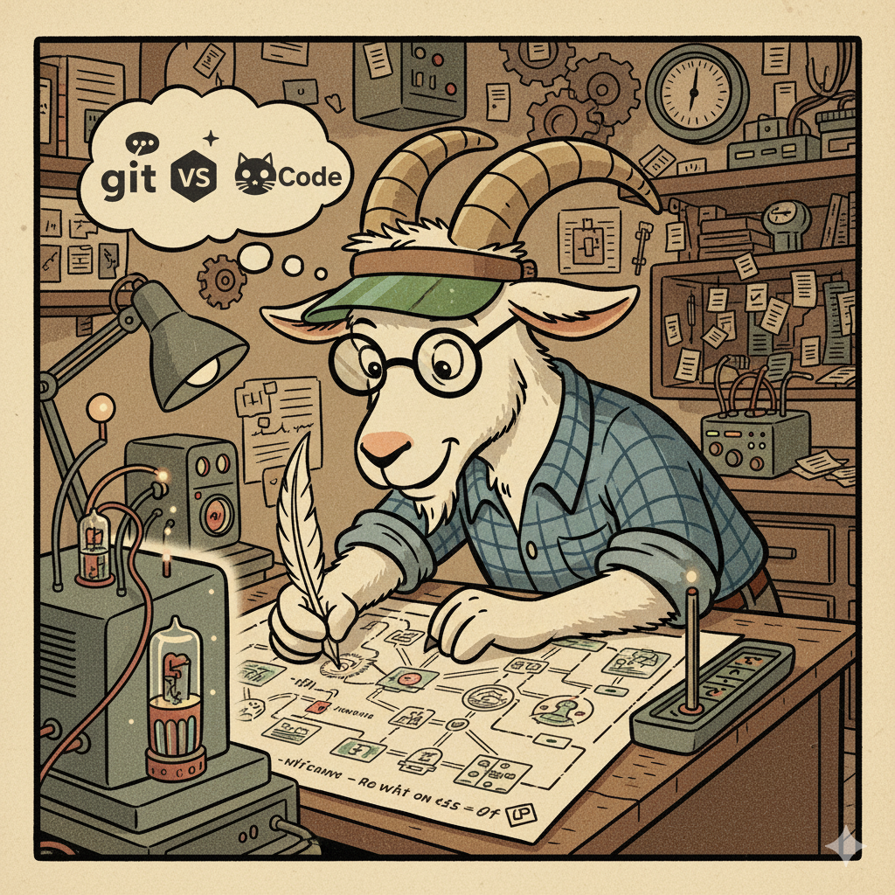

SOBRE
Meu nome é Guilherme Ribeiro, Programador e Desenvolvedor Front-end com experiência em HTML/CSS, JavaScript, React.js, TailwindCSS, Bibliotecas e Frameworks para sites estáticos, Markdown e Pandoc para produção de eBooks, além de versionamento utilizando Git.

TECHSTACK
- Sites e Templates Estáticos
- Totalmente Responsivos
- Otimizados para Manutenção
- - HTML/CSS
- - JavaScript
- - TailwindCSS
- - AOS.js
- Personalização de projetos conforme a necessidade do cliente
- Experiência em versionamento Git/GitHub
- Hospedagem Prática (Netlify/Vercel/Cloudflare)
- Envio imediato de arquivos
EBOOK
Sites e Templates Estáticos Tutorial 2025 - Este eBook ensina como criar sites estáticos profissionais usando ferramentas modernas e gratuitas. Ideal para portfólios pessoais, landing pages e projetos simples que não requerem backend.
Markdown e Pandoc Tutorial 2025 - Este eBook apresenta um fluxo de trabalho completo para produção de ebooks utilizando Markdown como formato de escrita e Pandoc como ferramenta de conversão. Você aprenderá desde os fundamentos até técnicas avançadas de exportação para diversos formatos.